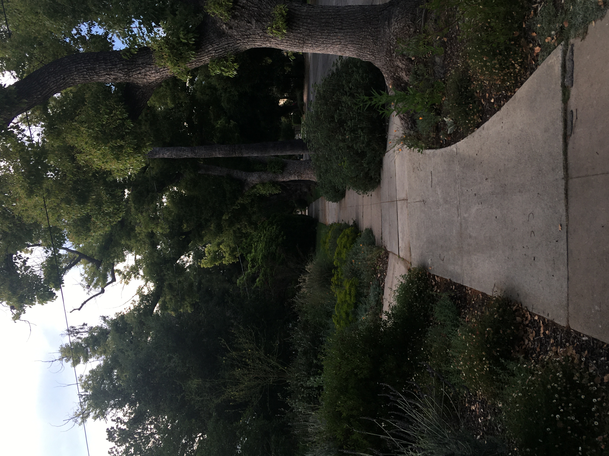
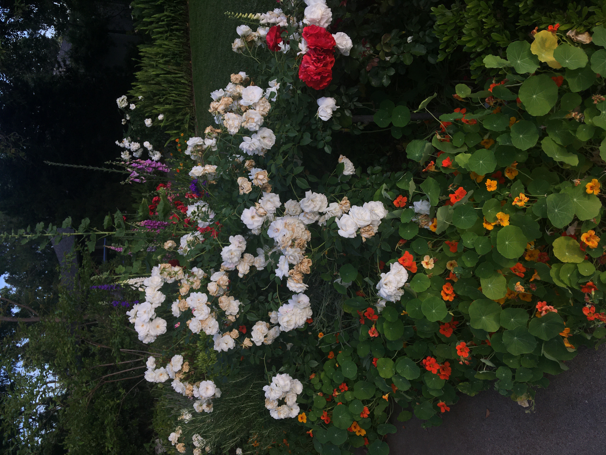

#1 everydaylife
Could you tell us about the neighborhood you live in?
Lauren Kima Graycar: I live in Altadena, California, in San Gabriel Valley at the foothills of the Angeles National Forest. Some walking distance favorite places are Christmas Tree Lane with its annual tree lighting ceremony, and Roma Market with its famous sandwich. Driving distance favorites are too many to list: 99 Ranch; Atlantic Times Square; Camellia Square; the classics Din Tai Fung, Hai Di Lao, and Meizhou Dongpo; Young Dong Tofu; Kee Wah Bakery; and my top night Mian and Blackball. Just to name a few.
Is there any fun art/cultural community around you? Do you often join their activities?
Lauren: I’m a graphic designer at the Hammer Museum in Los Angeles, so it naturally forms a valuable part of my community here. The UCLA Film and Television Archive shows great, often hard to find films in the museum’s theater: biennials of new Chinese and Taiwanese cinema, and a screening in 2017 of Barbara Loden’s Wanda (1970) that became the basis of my research for a Kima book on the subject.
Lauren Kima Graycar: I live in Altadena, California, in San Gabriel Valley at the foothills of the Angeles National Forest. Some walking distance favorite places are Christmas Tree Lane with its annual tree lighting ceremony, and Roma Market with its famous sandwich. Driving distance favorites are too many to list: 99 Ranch; Atlantic Times Square; Camellia Square; the classics Din Tai Fung, Hai Di Lao, and Meizhou Dongpo; Young Dong Tofu; Kee Wah Bakery; and my top night Mian and Blackball. Just to name a few.
Is there any fun art/cultural community around you? Do you often join their activities?
Lauren: I’m a graphic designer at the Hammer Museum in Los Angeles, so it naturally forms a valuable part of my community here. The UCLA Film and Television Archive shows great, often hard to find films in the museum’s theater: biennials of new Chinese and Taiwanese cinema, and a screening in 2017 of Barbara Loden’s Wanda (1970) that became the basis of my research for a Kima book on the subject.


